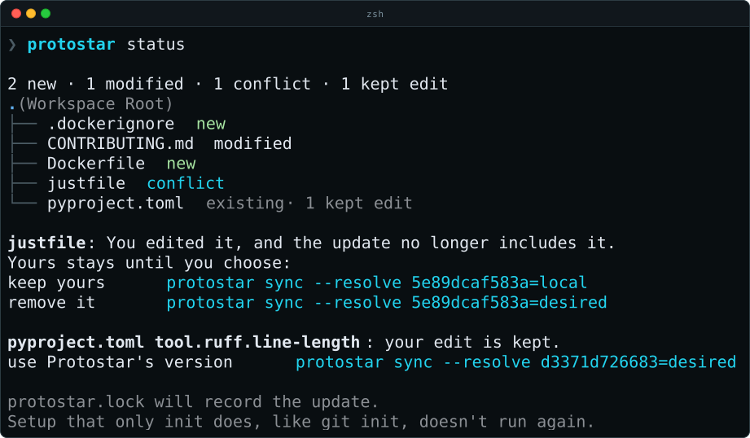
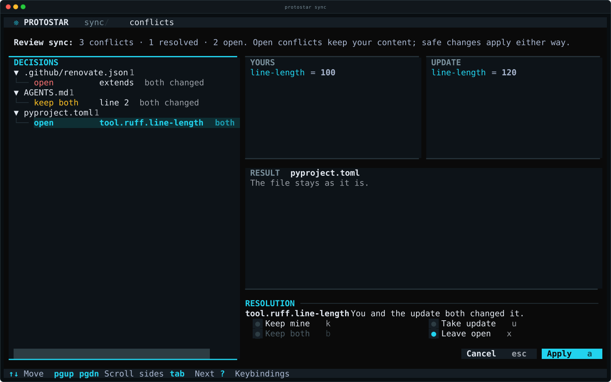

Review and synchronize a project¶
After a tracked init, commit pyproject.toml and protostar.lock. The project recipe records desired selection; the lock records accepted ownership. Run lifecycle commands from that project's root. Protostar uses the current directory and never searches ancestors for a project.
To stop tracking the project, run protostar eject. It shows the pending removal of protostar.lock and [tool.protostar] and asks for confirmation. Preview the pyproject.toml diff with protostar eject --dry-run, or pass --yes when no interactive terminal is available. Other files, including uv.lock, remain. After ejection, the lifecycle commands on this page no longer apply.
To keep projects current without running these commands by hand, with a scheduled update pull request, a check in CI, and template releases, see Automating Updates.
Review, apply, repeat¶
protostar init --template cli
protostar status
protostar diff
protostar sync --dry-run
protostar sync
protostar sync --check
status shows the files with pending work as the same labelled tree init previews: each is new, modified, removed, or conflict, and a file marks what was resolved, the proposals kept out, and your kept edits. Files the update leaves alone are not listed. Below the tree, each conflict, proposal, and kept edit says in a sentence what happened, what Protostar does unless you choose, and the sync --resolve command for each choice, ready to copy. A conflicted file can still have independent accepted edits. diff and sync --dry-run add each accepted byte change as a unified diff. status also lists the packages uv will add. What uv then changes in pyproject.toml and uv.lock is unknown until it runs, so previews do not invent a resulting lockfile diff.

Here the recipe turns Docker on and just off. Docker's files are new, and CONTRIBUTING.md changes to match the new tools. The justfile was edited by hand, so removing it is a conflict: it stays until you choose to keep it or remove it. The hand-edited Ruff line length is kept, and one command takes Protostar's value instead.
sync applies safe edits and composite ownership state transactionally. It never reruns project initialization, Git initialization, arbitrary template tasks, or IDE extension probes. It is not an environment reinstall or a package upgrade command. An unchanged repeat writes nothing and runs no subprocess.
sync does keep this clone's git hooks in line with the recipe, since they live in .git/hooks, outside the project's files. When the recipe wants a hook manager and one of its hooks is missing, as after switching to the production tier or in a fresh clone, sync runs its install. It removes the hooks a manager generated that can now only fail: those of a manager the recipe switched away from, and all of them once no hook manager is selected and no hook configuration is left. A hook you wrote yourself is never removed. A failed install is a warning, not a rollback. Hooks never count as pending work, so sync --check passes in a checkout without them, as in CI. Each resolver subprocess it does run (uv add per dependency group, or uv lock) leaves a ✔ line on screen as it finishes.
Built-in templates come from the installed Protostar version. Local templates use the recorded locator. A repository template uses the commit protostar.lock records until you move it with sync --to <ref>; see template versions. A revision at the same identity can update the project. Changing template identity, switching to tooling-only mode, or retargeting an alias is not a supported lifecycle update. Missing sources fail visibly rather than falling back to cached content.
Preserve local intent and handle partial updates¶
Suppose a template changes two settings and you independently edited one of them. Inspection reports the divergent setting as a conflict and the other as accepted. sync commits the safe setting while retaining your conflicting content and its previous applied baseline. It returns exit 1 with a partial result; this is a committed update, not a failed transaction.
protostar sync --json > sync-result.json
# Exit 1 with status "partial": inspect review.conflicts in sync-result.json.
protostar diff
Settle the conflict with a resolution, or edit your project or same-source template and review again. If local content already equals new desired content, Protostar can advance its baseline without rewriting that content. This still counts as pending work until sync records the advancement.
Generated files without a structured format, such as the justfile and Dockerfile, merge line by line against the text Protostar last wrote. Your edits and Protostar's changes combine when they touch different lines. When both change the same or adjacent lines, the whole file is kept exactly as you left it rather than half updated, and each overlap is reported as a diverged conflict with its lines (a one-based start and a count, numbered like a unified diff hunk header). The update stays pending until those lines match what you want. A checkout that only converts line endings, such as Git's core.autocrlf, is not an edit, and a merged file keeps your line endings.
Local edits or deletions with unchanged desired intent are preserved and do not make checks fail. Deleted managed files stay deleted. Each preserved edit has an id, and you can take its update later. Equal foreign content remains unowned.
Content Protostar stops producing is retracted: a tool you turn off, a template option you change, or a file, dependency, or payload a new template version drops. An unedited copy is removed and an edited copy is kept with a retracted conflict, whose local choice keeps it as yours and desired removes it. This covers seeded files, owned dependencies (after which the lock is refreshed), each [tool.*] table in pyproject.toml, append regions, each step or key of a GitHub Actions workflow (for example the Codecov upload steps after you turn Codecov off), and each hook and hook repository in the hook configuration (for example mypy's hook after you turn mypy off, so no commit runs a tool that is no longer installed). A whole configuration file whose tool you turn off, such as zensical.toml, .github/codecov.yml, .readthedocs.yaml, a workflow, the hook configuration, Renovate's, or the VS Code settings, is retracted key by key the same way. When nothing of Protostar's is left, the file is deleted if it holds nothing else and kept with only your own keys if it does. A generated justfile or Dockerfile whose tool you turn off is deleted when unedited; an edited one is kept with a retracted conflict for the whole file. Seeded project metadata such as [project].name and dependency-group includes are never retracted. Workflow files are merged by job and by step name, so your own jobs, steps, triggers, and inputs stay. An action version you or Renovate changed (including a SHA pin) is yours: a newer Protostar version of the same action does not conflict and sync --check passes.
Resolve conflicts¶
A conflict stays open, and sync --check keeps failing, until you settle it. In an interactive terminal, protostar sync opens a screen that shows both sides of each conflict and what the file will look like, before anything is written:
Every resolution makes the update Protostar's new baseline there; your choice decides only which content stays in the file:
| Choice | Meaning | Afterwards |
|---|---|---|
local |
Keep mine | Your content reads as a local edit of the update and is preserved until the update changes there again. |
desired |
Take the update | The update is written. |
both |
Keep both | Your lines, then the update's. Only for overlapping lines of a text file. |
Choosing local is also how you finish a hand edit: change the file however you like, then keep it. The same choices settle every kind of conflict Protostar can show both sides of:
- A
divergedortype-mismatchvalue or line range takes the side you choose. - An
unownedfile, value, or workflow job kept withlocalis adopted: it stays as it is and merges three ways from then on (a job's steps by name). Withdesiredit is replaced. - A dependency whose requirement differs from the request (
unowned,diverged, ordeleted-ancestor) kept withlocalstands for the request from then on, soruff>=0.5satisfies a request forruff; withdesiredthe resolver adds the request. - A
deleted-ancestorfile or table kept withlocalstays deleted;desiredrecreates it. - A
retractedvalue kept withlocalstays and is no longer Protostar's;desiredremoves it.
Conflicts caused by document policy (duplicate-identity, shared-structure, unsafe-pin), a table outside the file's root, and a dependency listed more than once offer no choices. Fix those by hand.
In an interactive terminal, sync opens its review screen before it applies anything whenever a conflict can be settled or it proposes a change to a file you already have. It lists them by file, with your preserved edits, showing your side, the update's side, and a preview of the file each choice produces. Press k to keep yours, u to take the update, b to keep both, x to leave a conflict open, and n for the next open one; on a file's row, a choice applies to every conflict and proposal in that file, but never to a preserved edit. a applies the sync with those choices, and open conflicts keep your content as before. esc asks before leaving without applying anything. The screen never opens for --dry-run, --check, --json, --resolve, or a non-interactive terminal, and never for preserved edits alone.

Each conflict has an id covering its location and content. status prints the sync --resolve command for each choice it offers, and JSON reviews list both with every side under review.conflicts. Pass --resolve SELECTOR=CHOICE to sync, where the selector is an id or a file path that selects every conflict and proposal in that file:
protostar sync --dry-run --resolve 3f2a9c1b7d4e=local
protostar sync --resolve justfile=both --resolve 8b0e5d2c61fa=desired
Later selectors override earlier ones, so an id can refine a file-wide choice. Settled conflicts move from review.conflicts to review.resolved. A selector that matches nothing fails before anything is written. An id stops matching as soon as either side of its conflict changes, so a choice is never applied to content you did not review. The overlapping line ranges of one text file are applied together: resolve every one, or the file stays as it is.
Changes to files you already have¶
A change Protostar would make inside a file it has never owned is a proposal: init in an existing project, or a tool you enable whose configuration file you already wrote. That covers a new key or table, members added to a list such as Ruff's select, and a new dependency in a project whose requirements it never managed. A proposal applies unless you keep it out. Keeping it out records Protostar's version as the baseline without writing it, exactly like keeping your side of a conflict, so it reads as your deletion from then on: it is preserved, sync --check passes, and you can take it later.
The init change review opens on its Decisions tab: every conflict and proposal by file, the conflicts first, each row led by what happens to it. Press k or u on a row to keep yours or take the update for that change, or on a file's row for all of its changes; settling a conflict moves on to the next open one, and n jumps there from anywhere. K keeps yours for every conflict and change in the review, which adopts the project exactly as it is. When no setup command creates them, as in a project that already has a pyproject.toml, the review shows the configuration merges and dependency choices too, so every change to an existing file is decided before anything runs. status and JSON reviews list proposals under review.proposals; a proposal without a resolution applies. --force-merge without a review applies every proposal, as before. To choose without the review, init takes the same --resolve as sync, with the ids init --dry-run prints:
.gitignore additions stay automatic: they only add missing lines.
Take a kept change later¶
Every preserved edit or deletion is a decision you can revisit. status prints the command that takes the update for each, and JSON reviews list them under review.preserved with their sides. Taking the update writes Protostar's version there, through the resolver for a dependency:
A file path never selects preserved edits, since each is deliberate: name them by id. The sync review screen lists them too, where u on a preserved edit's own row takes its update. This is how a project adopted as it was takes up Protostar's standards one at a time.
Edit the recipe deliberately¶
Edit entries in [tool.protostar] using the recipe rules. For example:
The tools table is left out of pyproject.toml until it has an entry, so add it when you need it.
An omitted tool follows current template opinion, then the fallback captured on initialization. Current global defaults cannot change project selection. An opt-out suppresses only that tool's contributions and warnings, retaining its previous files, dependencies, and ownership. Other producers sharing a target still apply. Re-enabling a tool resumes reconciliation against retained baselines; it does not restore deleted files or adopt foreign content. Filesystem edits never implicitly write a recipe opt-out. Captured metadata and year keep rendering repeatable.
Enroll an existing project¶
A project Protostar has never touched starts with protostar init, which reads the project first and fills the recipe from it; see existing projects.
A Stage 1 project needs an explicit recipe. Rerun its original selection:
Include the original tooling choices and source as appropriate. Protostar does not reconstruct a request from the ownership lock. Enrollment preserves existing ownership and does not adopt equal foreign content. Template variable values come from the recipe; see template variables. Missing recipes, malformed state, and missing variable values fail before mutation.
Security and rollback boundaries¶
Inspection does not write workspace files, populate source caches, run subprocesses, or prompt. Remote acquisition can access the network outside pure planning and holds source data in memory. Each invocation captures one source revision and hook registry snapshot; apply uses those captured decisions without a second fetch. Trust is not inherited from the recipe or lock: when an update from a template you haven't trusted needs uv add, uv lock, or a hook install, sync asks you to confirm those commands first, or takes --trust (see the trust model). Initialization-only tasks remain excluded even for trusted external templates.
Template variable values are recorded in the recipe after passing the secret guard when they were entered; sync does not check them again. Generated files and review diffs contain project content, so diffs are not a secret-redaction system. Keep credentials out of rendered configuration.
Before mutation, sync checks captured bytes, existence, and modes. Changed inputs abort as a stale review before the first write. This protects the review/apply interval, not arbitrary concurrent writes during execution. Symlinks and special filesystem nodes are rejected for transaction-managed targets.
Fatal resolver failures, timeouts, interrupts, and late state-write failures trigger automatic rollback. Managed processes are terminated and reaped before journaled files are restored to exact original bytes and POSIX modes. Direct edits, ownership state, and declared resolver pyproject.toml/uv.lock paths are covered. .venv and global caches remain outside that guarantee.